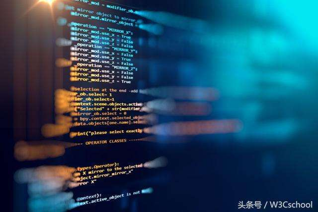

Most Python implementations (including CPython) include a read–eval–print loop (REPL), permitting them to function as a command line interpreter for which the user enters statements sequentially and receives results immediately.
Other shells, including IDLE and IPython, add further abilities such as improved auto-completion, session state retention and syntax highlighting.Most Python implementations (including CPython) include a read–eval–print loop (REPL), permitting them to function as a command line interpreter for which the user enters statements sequentially and receives results immediately.
As well as standard desktop integrated development environments, there are Web browser-based IDEs; SageMath (intended for developing science and math-related Python programs); PythonAnywhere, a browser-based IDE and hosting environment; and Canopy IDE, a commercial Python IDE emphasizing scientific computing.
